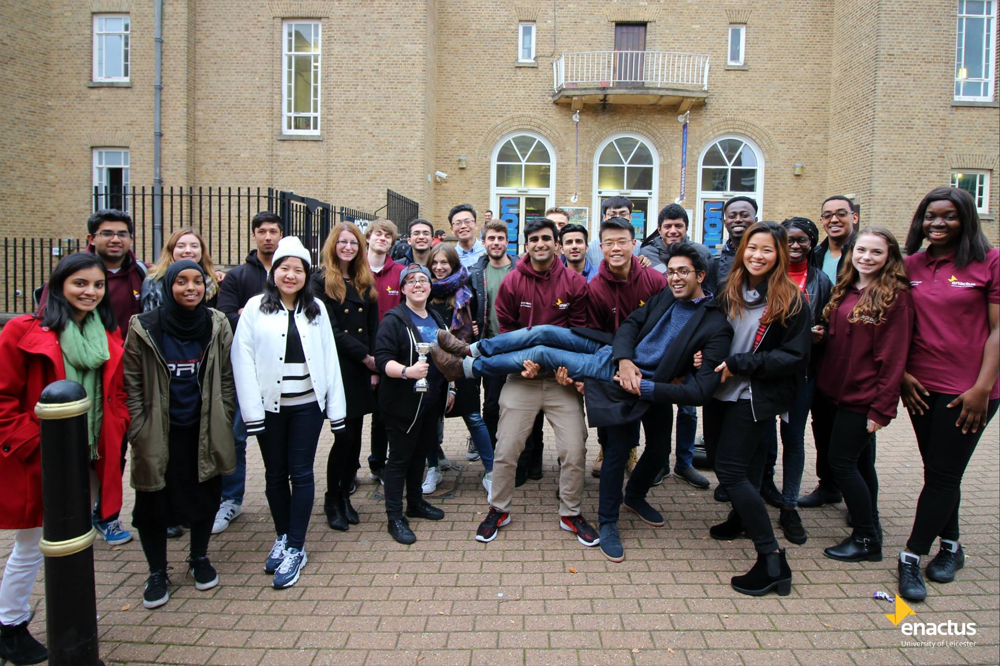
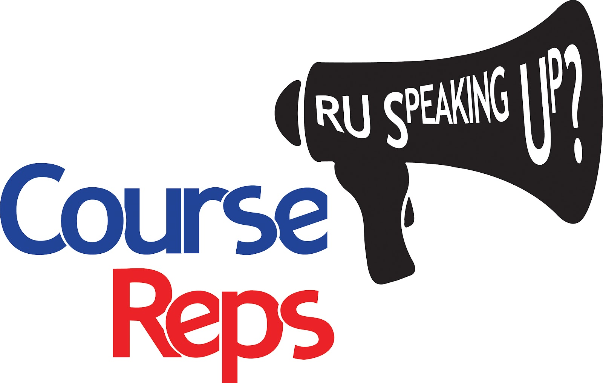
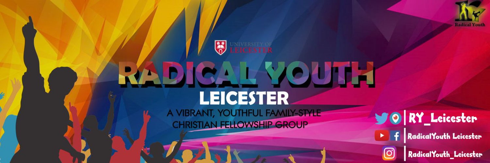

Who Am I?
Michael S. Lehmann
A Passionate Software Engineer & Thinker
About Me
My name is Michael S. Lehmann, and I am a passionate Software Engineer living in the United Kingdom. My fascination for technology originated from a young age, when seeing a family member or friend purchase and unbox a new technological device would excite me, whether it was a device such as a new laptop or even a smartphone. I consider myself very fortunate to be able to enjoy the daily introduction of new technologies, fascinated me increased my desire to study humanity’s greatest creation which is information technology. Additionally, throughout my childhood experiences with technological gadgets, I have always sought to know the ingenuity behind the creation of such technologies. Likewise, when I was 11 years old, I used to play a mobile game called ‘Snakes’, which was on the Nokia 3310. Apart from playing the game, I always wondered how mobile games like this and many others were made. I found such aspects of computing very intriguing.
Furthermore, my interest and admiration for technology only grew when I studied Computing as an undergraduate and then Advanced Computer Science as a postgraduate. During my postgraduate study I gained so much knowledge and understanding ranging internet from cloud computing, software engineering, the semantic web to fundamentals of cryptography. Due to this, I became aware of the unlimited potential computer science, so much that my desire now is to gain a professional career in it! The aim is to become a very proficient IT professional who is then able to create technology that transforms and improves the live of individuals in our contemporary society. I have taken steps towards this goal, when I secured my first role as Graduate Software Engineer at a Software Surveillance Company, whom I worked for just under 2 years.
Below are the respective links to both my LinkedIn page and github:

My Interests
I have a keen interest in sport. My interest lie in Football and Basketball. Also, I engage in various other sport activities such as rock climbing and the gym to maintain a healthy lifestyle.
University Student Societies & Experience
Enactus Society
Enactus Leicester is a social enterprise company who develop and launch social sustainability projects. In simple terms, Enactus Leicester consists of talented and ambitious students, who are determined to fight social inequality by running projects which benefit communities on a global scale. My role mainly consisted of maintaining/updating developing the Enactus website which is crucial for the business's marketing and public relations. I was a an active member of the Enactus Society, from second year and final year of my undergraduate degree. In my final year, I was part of the commerical team who were in charge of the commercial project called the "Farmer's Market". The Farmer's Market is an annual event that takes place during the christmas and easter period. So on the last week of term prior to Christmas/Easter, the university hosts local business in the communiity to come and set-up stalls, hire homeless people to work for the day, with the aim of allowing students to invest in the local economy. My role was to contact local businesses like restaurants etc. to see if they will be interested to come to the events.
{kind=link}
Course Representative
I became a course representative during my first year. And I have served as a Course Representative two consecutive years, which were during both my final-year and during my postgraduate degree. My role as a course representative was to analyse and diagnosing issues student are having with their course. In addition, I had the responsibility of speaking to lecturers and professors regarding the concerns of the students. Then I will liaise with the departmental staff during the Student Staff Committie meetings (SSC). I achieved this by being the bridge of communication between the Student Union and the Informatics Academic Department. Through this role I learned how to communicate effectively, and develop my organisation skills. During my final-year, I served as a student-chair which means I was responsible for initating and leading the discussion of the SSC meetings, and recording minutes.
{kind=link}
Radical Youth Society
I am proud to say that I was part of the Radical Youth Leicester, which is a vibrant Christian society adn student body. It is a wonderful and vibrant society which welcomes students from all backgrounds.
{kind=link}
My Projects
Crime-GIS
MSc Project & Dissertation
This project is a self-proposed project which I completed as part of my dissertation for my masters degree at University. The aim of the project is to increase the validity of the national crime reports. I achieve this by giving the general public the opportunity to report crimes where ever they are. Users were able to report crimes anonymously as well as authenticated users, whereby their information can be shared with the police in case the police themselves wanted to follow up with witness reports. Users were able to see on the map locations near different crimes that have occurred near them. The mobile application was written in React-Native, whereas the backend was written in Node.js (Express Server) and utilizing Mongo DB for data store. I then hosted my backend api on heroku. I used the open source police api for historical data of crime reports.
View RepositoryProperty-Rental-System
University Coursework
This is an academic C# project I completed during my postgraduate degree. I implemented a rental system for a rental company that want to rent out housing properties that can accommodate the right type of people. Properties such as student flats are only available to students etc. It is a console app, whereby I implemented a client app, which invokes the WCF services that I also implemented on the server-side.
View RepositoryCryptographic-Secure-Communications-Application
University Coursework
I completed this mini-project, as part of a module I studied during my postgraduate degree, called Cryptography and Internet Security. I implemented a client-server application whereby the client sends message which is encrypted and the server decrypts the message. I made use of the Triple DES encryption algorithm, and crypographic signatures for authentication.
View RepositorySystem Re-engineering of AssertJ
University Coursework
This is a project I did as part of my Systems Re-engineering module. The focus of this project was to re-engineer the legacy system called AssertJ, which is a Java tool for testing assertions. In the project I had to conduct static analysis on the project, followed by dynamic analysis, in order to detect weaknesses in the legacy system. I carried out a re-engineering task on the legacy system, specifically on a larger classes. Based on my findings, I knew that if I did not fix those "God-Classes", it can raise concerns regarding the long term sustainability of the legacy system.
View RepositoryStaff Review System
Code test completed for a Car Dealership Company
This a mini-project which I had to complete as part of the application process for a junior developer placement role. This project is a Web Application which allows staff to review, update information about students who are enrolled on courses. This project exposed me to ASP.NET MVC, C#, the use of Microsoft Entity Framework and SQL Server.
View RepositoryMy Trainer - Gym Mobile App
Final Year Project
For my final year computing project, I made a mobile app, that allows gym users to sign-up and record their exercises, and they can watch tutorial videos on the app, to assist them with their training. Furthermore, they can view useful nutriion information. as for personal trainers they can sign up and add clients they work with to the app, and manage their clients workout routines. The application was written in ES6 JavaScript, React-Native. I used the following technologies: nodejs, npm and firebase (as the backend service) and redux (for state management).
View RepositoryManager App
Udemy - Complete React-Native and Redux Course
This is a mobile app is an employee management system, that allows Managers to add employees to the system. Managers can update or remove their employee records from the app. I developed this app whilst self-teaching myself how to make mobile apps in react-native. I gained skills in using firebase database and authentication, state management with redux.
View RepositoryFinancial Business Calculator
UoL Computer Science Coursework
University Coursework which I completed as part of the assessment criteria for the Computer Science module - Financial Business Computing. This application allows the user to calculate different financial ratios such as: Equity ratio, Asset and Liability ratios. I developed this application using Java for the functionality and JavaFX for the general user interface.
View RepositoryClient & Server Chatroom
Independent Study
This is a small client & server application using Java Swing (for the user interface). I completed this application as part of my independent learning because I wanted to understand Java Socket programming.
View RepositorySoftware Engineering Project
Organised by FDM Group and University of Leicester
This software engineering group project consisted of me working in an group with fellow students, and applying agile methodologies to software development. This project allowed me to gain experience and develop knowledge of how software development is carried out using agile principles such as: Scrum, Continuous Integration (CI using Travis). It also allowed me to gain an understanding of every role in an agile project. My role in the project was a compliance officer/requirements analyst - which involved identifying and writing good requirements. On the technical side, I assisted my group as a front/back-end developer. This allowed me to develop my knowledge of Java Spring MVC, Bootstrap and JavaScript. I really enjoyed working in an agile environment and I seek to secure a job role that revolves around working in an agile way.
View RepositoryMy Skills
Majority of my software skills were developed through independent learning. My first introduction to programming was when I studied the Computer Science module - Program Design which introduced me to the Java programming language. Additionally, other Computer Science modules such as: Data Structures & Development Environments, GUI & HCI and Operating Systems solidified my understanding OOP and advanced programming concepts such as multi-threading and socket-programming.